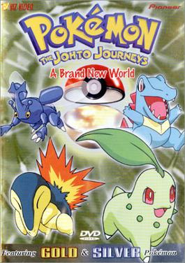

Welcome to the PokéStories
Here you will find every Pokémon adventurest stories of your favorite character Ash Ketchem.
so, lets enjoy these stories.
Kanto Region & Orange Islands (Generation 1)
Here the story tell's about a Pokémon Trainer "Ash Ketchum " from Pallet Town
whose Started his journey with Pikachu, in Kanto Region & Orange Islands to become a Pokémon Master.
Read the story of Kanto Region & Orange Islands
Johto Region (Generation 2)
In the journey of becoming a Pokémon Master,
Ash Ketchum going to compete with Gary to win in Johto League.
Read the story of Johto Region

Hoenn Region (Generation 3)
Ash and his Pikachu continue his journey to become a Pokémon Master,
here they reached in new region to participate in the Hoenn League to win the competition.
Read the story of Hoenn Region
Sinnoh Region (Generation 4)
Departing for Sinnoh, Ash once again left his previous captures from the Hoenn Region at Professor Oak's laboratory, with the exception of his Aipom, who'd snuck along.
So now let's see what will happen in this journey to become a Pokémon Master.
Read the story of Sinnoh Region
Unova Region (Generation 5)
Ash traveled with Delia and Professor Oak on a trip to the Unova region.
After losing in a battle to Trip and seeing the power of the Legendary Pokémon Zekrom, Ash became interested in traveling Unova to meet new Pokémon, as well as new friends.
Read the story of Unova Region
Kalos Region (Generation 6)
After 5 regions, Ash decided to visit Kalos region to compete in the Kalos League and to continue his dream of becoming a Pokémon Master.
Read the story of Kalos Region

Alola Region (Generation 7)
Ash Ketchum Started his journey from Pallet Town to become a Pokémon Master,
and he reached to the Alola Region and participate in the Alola League to become Champion.
Read the story of Alola Region